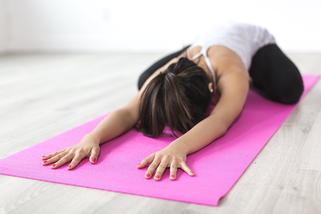
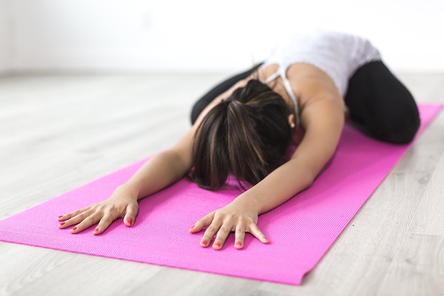

AEROBIC THEORY
Nowadays, to improve health, enhance spirit and keep the body healthy, people often turn
to aerobics. When exercising, the body secretes sweat, breathing and the heart beats faster. So what is
aerobic exercise? What are the benefits of aerobic exercise? MindfulIntentions will answer these questions
below.
WHAT IS AEROBICS?
Aerobics is an exercise method that is popular with many people because this subject is
not too strict in terms of subjects. Aerobic aerobics is a harmonious combination of exercises with the
rhythm of the body accompanied by music. This coordination comes from many parts of the body such as arms,
legs, buttocks and waist.
This discipline is a combination of any physical exercise that causes your body to sweat,
breathe faster and your heart beat faster at rest. Thanks to that, people who practice aerobics will have a
supple, flexible body and improve their overall health. At the same time, to prevent fatigue, relax, and
increase health, combine it with a massage chair, treadmill or exercise bike.
In addition, aerobic exercises will help you release negative energy, burn calories effectively, bringing a
feeling of comfort and relaxation to the practitioner.
BENEFIT OF AEROBIC EXCERCISE
Aerobics brings many different benefits to the body. Below we will point out 5 main
benefits that aerobics brings.
CONTROL BODY WEIGHT
When exercising, you often have to combine aerobic exercises with fast rhythms. From
there, it requires the body to move continuously throughout the workout session. Therefore, supporting the
body to burn excess fat effectively, along with sound will make you happier and motivated to continue
exercising.
Aerobic exercise will help maintain a toned physique and control weight. Moreover, if you combine it with a
reasonable diet and regular exercise, it will bring outstanding weight loss results.
IMPROVE MEMORY
Aerobics requires you to remember a lot of movements and moves. Therefore, to be able to remember, your brain must be more flexible. Over time, the brain remembers more and more, which then becomes a habit and helps reduce the risk of dementia.
With an intensity of about 3 times/week, it will help improve memory in people with Alzheimer's disease. This discipline brings both physical and mental benefits to the practitioner.
MAINTAIN STABLE PHYSICAL STRENGTH
Initially, aerobic exercise can make you feel tired and your muscles ache after waking up. However, after practicing for a long time with a stable frequency, the body will become more flexible, physical strength will remain stable and the feeling of pain or fatigue will gradually decrease. This shows that exercise has greatly helped the body's endurance, especially cardiovascular endurance has also improved.
REDUCE STRESS, IMPROVE SPIRIT
Aerobic exercise helps release negative energy, reduce stress, tension, and anxiety so you become more comfortable. Furthermore, when exercising, the amount of oxygen in the blood increases, helping the body's organs to be fully nourished, which also contributes to making you.
When exercising at high speed, the body will release natural pain relievers (endorphins), helping the body stay healthy and refreshed.
In addition, spending about 30 minutes a day and 3 sessions a week will help reduce mild cognitive impairment in the elderly.
REDUCE THE RISK OF DISEASE
According to research, people who exercise regularly and regularly have a longer life expectancy than those who do not exercise. Because aerobics helps you reduce the risk of certain diseases such as:
- Prevent bone and joint diseases, especially osteoporosis.
- Good control of blood sugar, or prevention of hypotension.
- Helps reduce the risk of coronary artery disease.
- A healthy body helps you avoid the risk of diseases such as obesity, high blood pressure, diabetes, stroke and can reduce the risk of cancer.
- Increases good cholesterol and reduces bad cholesterol, supporting a healthy body.
- Prevent cognitive decline.
- Strengthens the body's immune system, preventing some diseases such as flu, colds...


 
